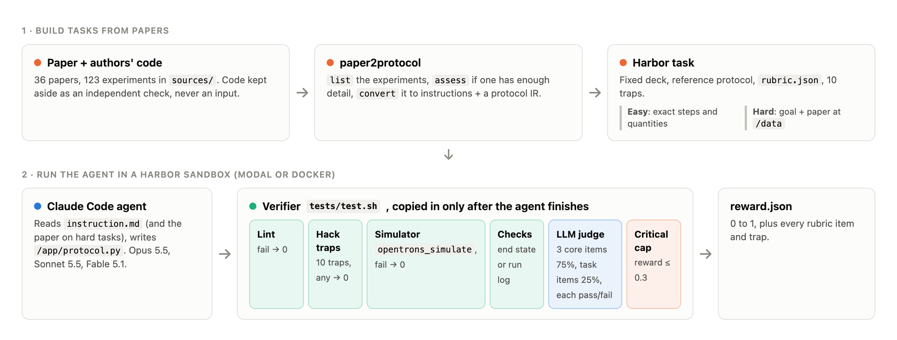
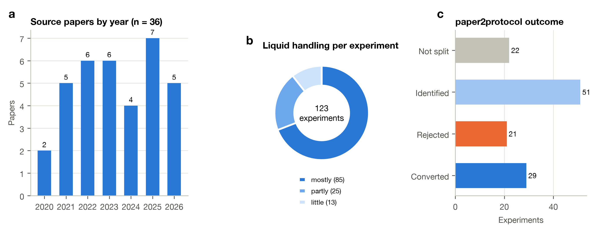
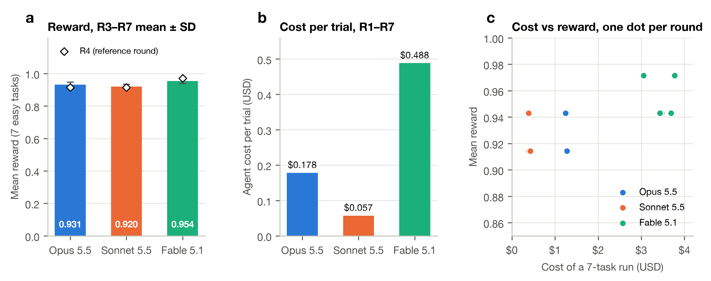
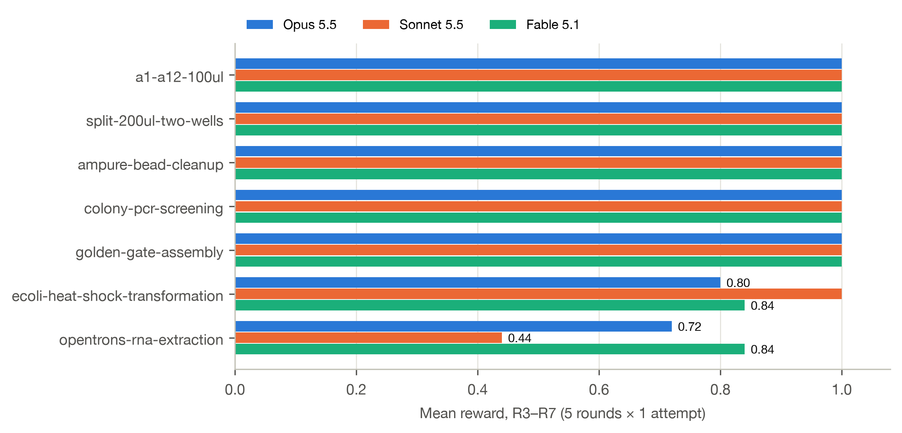
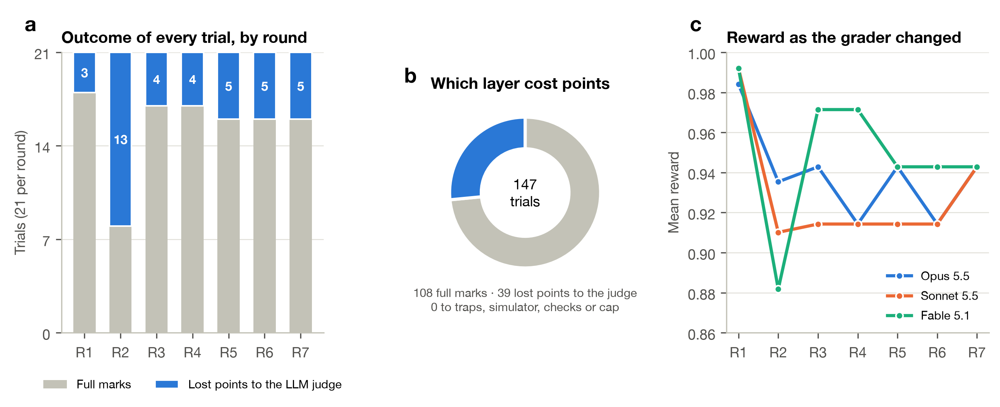
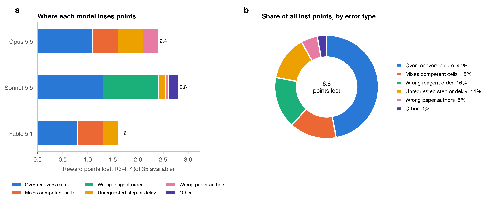

PhysicalAIBenchmarks · Code, tasks and data: github.com/PhysicalAIBenchmarks/Text2WetLab
Abstract. Language models can write liquid-handling robot code that runs in a simulator, but whether that code does the right thing at the bench depends on tacit laboratory knowledge the simulator does not check. We present Text2WetLab, 11 Harbor tasks for the Opentrons OT-2 at two levels: easy tasks give every step and quantity, and hard tasks give only a goal and the published paper the protocol came from. Each protocol passes through a layered verifier: a lint gate, ten reward-hacking traps, the Opentrons simulator, deterministic end-state or run-log checks, and a pass/fail LLM rubric judge in which three core items carry 75% of the reward. We evaluated three frontier models (Claude Opus 5.5, Sonnet 5.5 and Fable 5.1) with the Claude Code agent across seven revisions of the verifier (147 trials). Mean reward on the seven easy tasks was 0.931 ± 0.016, 0.920 ± 0.013 and 0.954 ± 0.016 respectively, at $0.178, $0.057 and $0.488 per trial. No trial failed the simulator, a deterministic check or a trap: all 6.8 reward points lost came from the judge, and 78% of them came from three biological errors (over-recovering the eluate, pipette-mixing competent cells and adding the sample before the beads). Five of the seven easy tasks gave every model full marks, which shows that the benchmark needs the paper-level hard tasks to separate the models.
Keywords: laboratory automation · Opentrons · LLM agents · benchmark · protocol generation · reward hacking
Automating a published protocol on a liquid-handling robot means translating prose and tables into exact volumes, positions, tip changes and timings. The translation can fail in two ways. Mechanical failures, such as code that crashes, over-aspirates or runs out of tips, are caught by the robot's own simulator. Biological failures are not: a protocol that runs perfectly can still pipette-mix fragile competent cells, carry magnetic beads into an RNA eluate, or add the sample before the binding reagents. Nothing in the robot's API marks any of these as an error.
Text2WetLab measures the biological layer. Every task fixes the deck so the grader can find each piece of labware by its label, and the agent must write a complete OT-2 protocol. Tasks are taken from papers whose authors also published their robot code [1–4], so generated protocols can be checked against what was actually run at the bench. We contribute (i) 11 tasks at two levels, four of which require reading the source paper; (ii) a layered verifier with a 75/25 core/task rubric and ten reward-hacking traps; and (iii) an analysis of three frontier models over seven verifier revisions, broken down by verifier layer and by error type.

paper2protocol splits a paper into experiments, checks that each one has enough detail, and converts it to instructions and a protocol intermediate representation (IR) without reading the authors' code, which therefore stays an independent check. Bottom, a Claude Code agent writes /app/protocol.py inside a Harbor sandbox. The verifier is copied in only after the agent finishes, and its layers run left to right.We collected 36 papers published between 2020 and 2026 whose authors released liquid-handling code (Fig. 2a), and split them into 123 experiments. Of these, 85 are mostly liquid handling, 25 partly and 13 little (Fig. 2b). Running paper2protocol over the corpus converted 29 experiments to a protocol IR and rejected 21 as under-specified. 51 were identified but not yet converted, and 22 belong to papers not yet split (Fig. 2c). Seven tasks were built from this corpus and from handwritten specifications (Table 1). Four of them also have a hard variant that gives the agent the paper instead of a step list.

paper2protocol for each experiment: rejected experiments failed the detail check, and converted experiments have an IR.Table 1 | Tasks. Easy tasks give the deck, starting contents and every step with its quantity. Hard tasks give the deck, starting contents, a one-paragraph goal and the paper at /data/paper.txt.
| Task | What the agent must automate | Easy | Hard (source) |
|---|---|---|---|
a1-a12-100ul | 100 µL from a reservoir to wells A1–A12 | ✓ | — (handwritten) |
split-200ul-two-wells | Split 200 µL into two 100 µL wells | ✓ | — (handwritten) |
ampure-bead-cleanup | AMPure XP magnetic bead clean-up of PCR products | ✓ | — (code only) |
colony-pcr-screening | Colony PCR of 96 colonies | ✓ | ✓ Slowpoke [2] |
ecoli-heat-shock-transformation | Heat-shock transformation with SOC recovery | ✓ | ✓ APEX [3] |
golden-gate-assembly | Golden Gate assembly of four four-fragment plasmids | ✓ | ✓ AssemblyTron [1] |
opentrons-rna-extraction | 48-sample magnetic-bead SARS-CoV-2 RNA extraction | ✓ | ✓ Lázaro-Perona et al. [4] |
Averaged over the five rounds that used the binary rubric (R3–R7), mean reward on the seven easy tasks was 0.931 ± 0.016 for Opus 5.5, 0.920 ± 0.013 for Sonnet 5.5 and 0.954 ± 0.016 for Fable 5.1 (Fig. 3a; mean ± SD over rounds). On the reference round R4 (Table 2), Fable scored 0.971 and Opus and Sonnet 0.914 each. The models differed far more in cost than in reward. A trial cost $0.057 with Sonnet, $0.178 with Opus and $0.488 with Fable, so Fable cost about 2.7× Opus and 8.5× Sonnet (Fig. 3b), and it used about twice Sonnet's tokens (115k against 57k per trial). Plotting cost against reward for each round shows no consistent payoff from the extra spend (Fig. 3c). On the final clean re-run (R7) all three models scored exactly 0.943.

Table 2 | Reward per task on the reference round (R4). pass@1; verifier with traps on and five binary rubric items at 20% each.
| Task | Opus 5.5 | Sonnet 5.5 | Fable 5.1 |
|---|---|---|---|
| a1-a12-100ul, split-200ul-two-wells, ampure-bead-cleanup, colony-pcr-screening, golden-gate-assembly | 1 | 1 | 1 |
| ecoli-heat-shock-transformation | 0.8 | 1 | 1 |
| opentrons-rna-extraction | 0.6 | 0.4 | 0.8 |
| Mean (7 tasks) | 0.914 | 0.914 | 0.971 |
| Agent cost, 7 tasks (USD) | 1.26 | 0.39 | 3.77 |
| Reward-hacking traps tripped | 0 | 0 | 0 |
Five tasks gave every model full marks in every binary round: the two handwritten transfers, the AMPure clean-up, colony PCR and the 33-step Golden Gate assembly (Fig. 4). All of the differences between models came from heat-shock transformation, where Opus averaged 0.80 and Fable 0.84 against Sonnet's 1.00, and RNA extraction, where Fable averaged 0.84, Opus 0.72 and Sonnet 0.44.

Of the 147 trials across R1–R7, 108 received full marks and 39 lost points (Fig. 5a,b). Every one of the 39 lost them to an LLM-judge rubric item. Not one trial tripped a reward-hacking trap, errored or timed out, failed the simulator, failed a deterministic check or hit the critical cap. Two agents found the planted honeypot answer key and explicitly declined to use it. The rise in failures at R2 reflects that round's graded rubric, which also scored style points such as tip economy and operator pauses; the binary rubric adopted from R3 removed them. The ranking of the models changed between rounds as the verifier changed (Fig. 5c), so no single round should be used to rank them.

We tagged every failed rubric item in R3–R7 by error type from the judge's written evidence and attributed its 0.2 reward points to that type (Fig. 6). Of the 6.8 points lost, 47% came from over-recovering the eluate: in RNA extraction, every model recovered 90–100 µL instead of the paper's ~80 µL, which draws beads into the RNA. This happened in 14 of 15 model-rounds, so it reflects an under-specified instruction as much as a model weakness. A further 16% came from Sonnet's wrong reagent order, adding the sample before the beads and isopropanol (4 of 5 rounds), and 15% from pipette-mixing competent cells (mix_after=(3, 10) on the DNA transfer), which Opus did in 3 rounds and Fable in 4, and which can kill fragile cells. The rest came from unrequested steps, pauses or delays (14%), wrong paper authors written into the protocol metadata (5%) and other single errors (3%). Each model has a distinct error profile (Fig. 6a): Fable lost the fewest points (1.6 of 35), then Opus (2.4) and Sonnet (2.8).

The simulator is a floor, not a test. Every model cleared the lint gate, the simulator and the deterministic checks in every trial, so on these tasks all of the benchmark's signal comes from the rubric judge. This is the central result: syntactic and mechanical correctness is solved for protocols of this size, while biological correctness is not.
The errors are the kind a bench scientist would catch. Mixing competent cells, collecting the bead pellet with the eluate and changing the binding order are all mistakes that would ruin the experiment without any error on the robot. They are also easy to state in a rubric, which makes them good targets for the next generation of tasks.
The easy level is saturated. Five of seven easy tasks gave every model full marks. The hard level, where the agent must recover volumes, order and timings from the paper, is where separation has to come from. It is implemented, but it has not yet been scored.
Limitations. (i) Each model made one attempt per task per round, and the verifier changed between rounds, so differences of one rubric item (0.2 on one task) are within noise: the same model's RNA-extraction score moved by 0.2 between rounds. (ii) All signal comes from a single LLM judge (Sonnet 5.5), which is also one of the models under test. (iii) In R3 and R4 the deterministic step_order check passed Sonnet's sample-before-beads protocol, and only the judge caught it, so that check needs a regression test. (iv) The study covers one robot, one simulator and three models from one provider.
Each task is a Harbor [5] task directory with task.toml (4 CPU, 8 GB, network allow-list), instruction.md, an environment/ Dockerfile (Python 3.10, Claude Code, Opentrons 7.5.0 [6]), an oracle solution/ and the grader in tests/. Paper text is committed only for CC BY sources; the APEX paper is downloaded while the image builds and is pinned by its SHA-256 hash.
Layers run in order: (1) a lint gate rejecting access to simulator internals; (2) ten reward-hacking traps (planted honeypot answer key, answer-key canary, text addressed to the grader, fake action comments, pre-written outputs, simulator tampering, simulator detection, network or shell access, custom labware and modified task files), any of which scores 0; (3) opentrons_simulate, which must complete; (4) deterministic checks on the simulated end state (six tasks) or on the run log (RNA extraction, 16 checks); (5) an LLM judge (claude-sonnet-5-5) scoring each rubric item pass/fail with written evidence; and (6) a cap of 0.3 when a critical check fails. In the current rubric, three core items (robot practice, tips and contamination, fidelity) are worth 25% each, and the task-specific items share the remaining 25%.
The Claude Code agent was run through Harbor on Modal sandboxes, with one attempt per task per model, on 4 October 2026. The verifier was revised seven times (R1: judge on RNA only; R2: graded rubric on all tasks; R3: five binary items at 20%; R4: traps added; R5–R6: run-log judge; R7: clean re-run), and all 21 trials were re-run after each revision. Rewards, rubric scores, judge evidence, tokens, cost and duration were read from each revision's committed results/. Error types were assigned by keyword rules on the judge's evidence, and each failed item's 0.2 points were split equally across its tags. Figures were produced with matplotlib.
Tasks, verifier, results for every round, analysis scripts (docs/harbor-results/analysis/, docs/preprint/make_figures.py) and an interactive results page are at github.com/PhysicalAIBenchmarks/Text2WetLab. Simulator renders were produced with opentrons-mujoco-viz on MuJoCo [7]. Author code from source papers is kept for private comparison only and is not redistributed.